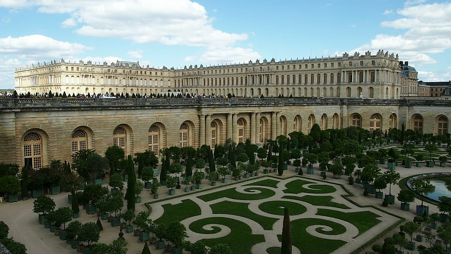
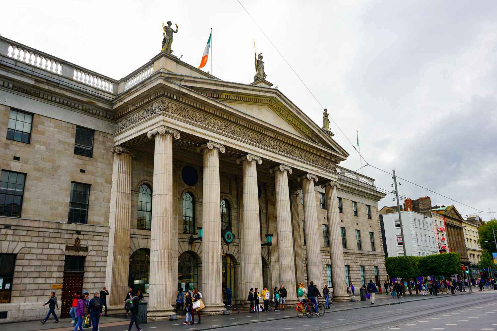

Sofia, Bulgaria


Geographical location: Europe
Sofia is the capital city of Bulgaria, a country located in Eastern Europe. It is part of the European Union and the primary language spoken is Bulgarian. The city’s population is around 1.3 million. In addition to its urban structures, Sofia also contains a mountain peak called “Vitosha”.
Vitosha is located 30 minutes from the capital’s center, and can be reached by foot, car, and by lift. The peak has an elevation of 7,520 feet and during the summer months the average temperature is around 64 degrees fahrenheit. This makes it a great sight for any type of traveler who seeks the outdoors.
Photo Gallery

Located in the city’s center, St. Alexander Nevsky Cathedral displays some of Sofia’s grand architecture.

Vitosha boulevard is often packed with both locals and tourists and contains shops, restaurants, live music, and great views.

The peak of Vitosha mountain offers a great view of Sofia from above.

A picturesque street giving insight into the locals' lives and the city’s public transport trams.

One of Sofia’s famous roads, this street is paved with an interesting material: yellow cobblestones. Being one of the first streets in the entire city, it was first paved in 1907 and continues to be maintained to this day.
Paris, France


Geographical location: Europe
Paris is one of the oldest cities in Europe and the city of romance. With a vast amount of cultural history, lined with iconic landmarks, intimate scenes, and world-renowned art museums.
Paris welcomes millions of visitors annually, each drawn to its exquisite charm and beautiful ambiance. Enjoy tasty treats and exquisite cuisine await, while city landmarks illuminate the night sky.
Photo Gallery

Champs Elysées / Arc of Triumph
Eiffel tower

Notre Dame Cathedral

Famous gallery in Paris
Palace of Versailles
Grand Canyon, America


Geographical location: North America
The Grand Canyon is a natural geological formation located in the state of Arizona. It is a steep-sided canyon carved by the Colorado River over millions of years. The canyon is known for its size, vibrant and varied colors, and intricate rock formations. It is one of the most famous and visited natural landmarks in the United States and around the world.
Though the Grand Canyon is one of the most iconic places to travel, there are many dangers that come from such a terrain. Between 2010 and 2020, 134 have died, mainly due to extreme heat. You can see below, examples of people getting hurt due to the heat and carelessness.
Photo Gallery

Overlook the Grand Canyon snowy cliffs while the sun is setting

Grand Canyon valley river during the day

Cliff overlooking the rest of the Grand Canyon

A mountain goat looking at the camera standing on top of rocks

Grand Canyon valley waterfall with trees
Dublin, Ireland


Geographical location: Europe
Dublin City is the capital city of the Republic of Ireland and is located in the east of Ireland. Dublin was originally a Viking settlement called Dubh Linn which translates to black pool. Dublin has always been a historically significant city in Irish history, from being the main city from which the British ruled over Ireland for 800 years to then being the setting of the 1916 Easter Rising and Irish War of Independence.
Today Dublin is a developed city boasting one of the strongest tech sectors in Europe and a booming tourism industry. Dublin is renowned for its sites such as the GPO, Croke Park, O'Connell Street, Temple Bar and Saint James Gate, which is where Guinness is brewed. Dublin is also surrounded by great coastal towns such as Dun Laoghaire, Howth and Skerries.
Photo Gallery

Used in the 1916 Easter Rising as a rebel holdout. Scars from the battle such as bullet holes are still visible on its pillars today.

Croke Park is Ireland's largest stadium, known for hosting the All-Ireland football and hurling finals annually. It has a capacity of 82,300 making it the 4th largest stadium in Europe.

O’Connell Street is Ireland’s main street. It’s named after Daniel O’Connell, an Irish politician who fought for the unrepresented Irish catholics to have a voice in the British parliament whilst Ireland was still under British rule. A statue was built in his honor at the end of the street.

Temple Bar is an area of Dublin City Centre that is named after the world famous pub, the Temple Bar. It is a tourist hotspot and is the only pub in Ireland where you will not find a single Irish person. It is also known to have one of the most expensive pints of Guinness in Ireland.

Saint James’s Gate is where Guinness is brewed. You are able to do a tour of the facility to see the history of Guinness, how Guinness is brewed and have a pint right from the source.